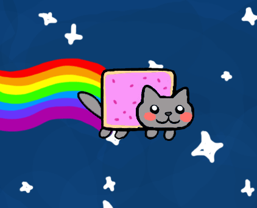

 I am Zan. There are many interesting things about me. For example, my name is Zan. Also, I have two arms and two legs. I have one hand/foot on each of my appendages. On those hands/feet I have five fingers/toes apiece. I sometimes eat, and I have a peculiar habit of sleeping every night. My quirk is that I don't like it when people whack me repeatedly with a stick. One of my interests is interesting things. Once, I even worked on a project! I think it was called Craig's Map. Anyways, I wrote an About Me page for that project. It was really long. I think it went something along the lines of...